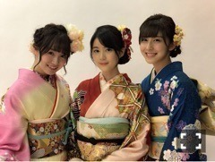
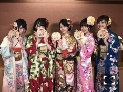

今日は成人の日でしたね。
新成人の皆様、おめでとうございます！
私も新成人の一人。
乃木神社で成人式をしてきました(^o^)
伝統を受け継いだ感じがします！

中3組～～
五年前と比べたら
私たちオトナになったのかな？
でも距離感みたいなものは変わらず
いくちゃんちーちゃんといると
やっぱり落ち着きます( ˇωˇ )
同い年ってそれだけで
なんかホッとするから不思議。
振袖はピンクo(^o^)o
まっちゅん、真夏さんに続くピンク振袖。
色は数年前から決めてました。笑
96年組は個性がバラバラなので
それぞれに合った振袖を着ていて
みんな素敵だった～～o(^o^)o
ハタチになってからは随分経つけれど
成人式というのは一つの節目なので
改めて、社会人として
しっかりしなくてはと思いました。
よく「若いっていいね！
何にでもなれるし、
何でもできるじゃない！」と言われるので
今のうちに、時を忘れるくらい
夢中になれる何かを見つけられたらいいな。

96年組集合写真。
この5人でもっともっと
乃木坂を盛り上げてゆきたいね！
日曜の夜は、らじらー！サンデー
新年一発目の乃木坂回。
ゲストは声優アーツに高垣彩陽さん、
乃木坂から松村沙友理ちゃんが登場！
募集中のメールテーマは
◯新春！らじらー！すごろく
◯MMSって何の略？
◯らじらー！ラブストーリー真夜中の電話
「初詣の願い事」篇
◯妄想キュン告白対決
紅白の時のお話もできたらいいな( ˆωˆ )
メールの宛先はこちら。
ふわふわあるばーじょん
さっきのとおんなじ顔してる。笑
(＊´・ω・＊)